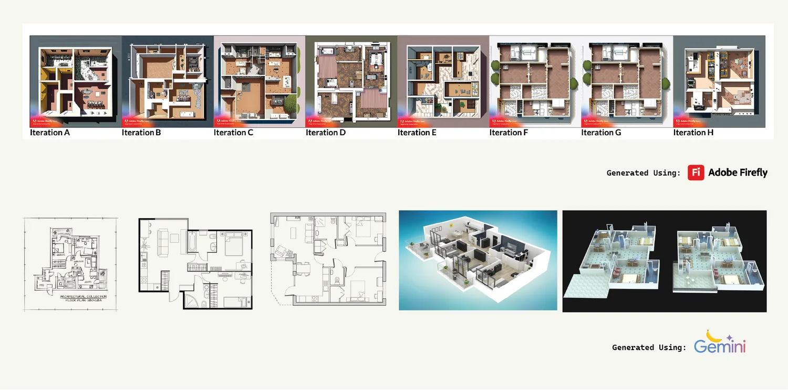

What GenAI addsSpeed and access
Reframing creative learning Design literacy in the GenAI era
A framework for learning design with generative AI without giving up curiosity, originality or accountability. It has four planes of judgment and nine action components, and this page lets you work through all of them.
Generative AI is reshaping how designers learn. It speeds up the work while quietly eroding the habits of judgment that creative practice depends on.
Why a framework is needed
The argument in four steps
What it unsettlesThree risks
Outputs that cannot be trusted on sight, thinner originality, and unclear responsibility.
The reframingThe paper's answer
Treat design literacy as an information practice.
Where it appliesThe whole learning ecosystem
Formal, non-formal and informal learning.
The framework, piece by piece
4 planes · 9 components
A design task and the learner's own intent go into a generative AI tool. Whatever comes out passes through four planes of judgment. Each plane is a different question the learner asks.
The nine action components are the checks that answer those questions. Each one has a home plane, and many also serve other planes, regrouping to fit the task.
Nine action components
One design task, through all four planes
A two-bedroom home in the desert
The briefTask allocation
Design a single-family home for the arid Southwestern United States
A graduate student is asked to design a two-bedroom, one-toilet floorplan for a hot, sun-exposed, arid site. The student may use generative AI models as part of the working process.
What stays with the humanClimate data (the EPW file), solar software (Grasshopper and Ladybug) and building codes must stay within human agency.
Epistemic planeIs it true and credible?
Can I trust what the AI gave me?
Any generative system returns many iterations for the same task. The learner's first job is to ask whether a given outcome is legitimate at all, by checking it against the design brief, the constraints and the context.
For this briefIs this actually a workable floorplan, and do the solar and shading suggestions make sense for desert heat?
Epistemic to operationalTriangulation
Check each iteration against its context, in every relevant medium
Every design task carries a brief, a context and a set of restrictions. Once an iteration is judged a legitimate possibility, it still has to earn its place: it is validated again against the requirements of the task and against how well it suits its setting.
For this briefEvery floorplan is tested as if it were built. Would it be livable on a real arid, hot Southwestern site, with the trees, boundaries and other site elements acting on it?
Operational planeCan I work the tool skilfully?
Understand, test and tune how the tool is used
Once the output can be trusted, the learner strengthens the generation parameters (the prompt, the inputs, the interface) by drawing on how the system actually works behind the scenes.
For this briefKnowing the logic that drives the generative system, can its controls be tuned to produce stronger iterations that still fit the context?
Ethical–legal planeIs it responsible and transparent?

Is this responsible, and whose work is it?
When GenAI takes part in the creative process, the first duty is disclosure: making clear which parts were generated. Those outputs are then examined for bias, for whether they represent every stakeholder fairly, and for whether a viewer could later trace how the work came to be.
For this briefWhich AI tool generated each floorplan? Are the layouts equitable and sustainable? Is any of them culturally invasive, or a near-identical copy of something already on the internet?
Reflective planeWhy did I make these choices?
Reflective critique
Selection, ethics and the shape of trust
- Why this specific iteration?
- Does it align with the design codes, the solar radiation requirements and the functional needs of its potential users?
- What assumptions on the human side played a role in the selection?
VerifiesCapabilityAdequacyContributionAwareness
Metacognition
Process, parameters and application
- Does the learner understand how AI worked in this design process?
- What was needed to satisfy a specific design problem, and how was each need fulfilled?
- How can this be replicated in practice?
VerifiesCompletionReplicability
Why was this iteration accepted?
Finally the learner steps back and gives an honest account of growth: whether they have built a real capability to work with GenAI, whether it is adequate for this task, how much of the outcome they contributed, and whether they are aware of the solution's appropriateness, ethics and compliance.
For this briefWhich factor was most decisive in choosing the floorplan? Could the designer modify or optimise it, and do it again if asked in a professional capacity?
The same judgment carries beyond the studio
Formal × non-formal × informal
The judgment built in the studio is meant to travel. The same planes and components reappear wherever someone reads a built environment, because the habit of questioning carries across every context.
-
Design studio
Formal learning. Where the judgment is first built, on a task like the desert home above.
-
Museum visit
Non-formal learning. Can the learner understand how floorplans work spatially, and how they were historically designed to cope with the sun of the American Southwest? This verifies awareness.
-
Photo-walk
Informal learning. Looking at a building, can the learner picture its floorplan, and read a posted layout well enough to find their way inside? This verifies replicability.